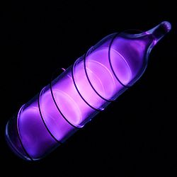
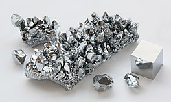
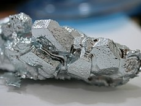
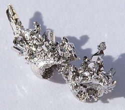
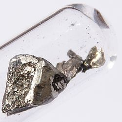
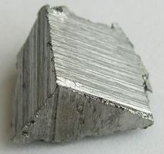
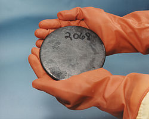

Legenda:
- Gases Nobres
- Lantanídeos
- Actinídeos
- Propriedades químicas desconhecidas
| Nome | Número atômico | Símbolo | Massa Atômica: | Grupo | Período | Ponto de Fusão °C | Ponto de Ebulição °C | Fontes |
|---|---|---|---|---|---|---|---|---|
| Hidrogenio | 1 | H | 1 | 1 | 1 | -259,1 | -252,9 | Água, metano |
| Hélio | 2 | He | 4,002602 | 18 | 1 | -272,2 | -268,9 | Gás natural, ar |
| Lítio | 3 | Li | 6,9675 | 1 | 2 | 180,5 | 1342 | Espodumena |
| Berílio | 4 | Be | 9,0121831 | 2 | 2 | 1278 | 2970 | Beryl (silicate) |
| Boro | 5 | B | 10,8135 | 13 | 2 | 2079 | 2550 | Boratos de sódio e cálcio |
| Carbono | 6 | C | 12,0106 | 14 | 2 | 3367 | 4827 | Carvão, petróleo, gás natural |
 Nitrogênio Nitrogênio | 7 | N | 14,006855 | 15 | 2 | -209,9 | -195,8 | Ar |
| Oxigênio | 8 | O | 15,9994 | 16 | 2 | -218,4 | -183 | Ar |
| Flúor | 9 | F | 18,99840316 | 17 | 2 | -219,8 | -188,1 | Fluorita |
| Neônio | 10 | Ne | 20,1797 | 18 | 2 | -248 | -248,7 | Ar |
| Sódio | 11 | Na | 22,98976928 | 1 | 3 | 97,8 | 883 | Halita |
| Magnésio | 12 | Mg | 24,3055 | 2 | 3 | 649 | 1090 | Magnesita |
| Alumínio | 13 | Al | 26,9815385 | 13 | 3 | 660 | 2467 | Bauxita |
| Silício | 14 | Si | 28,085 | 14 | 3 | 1410 | 2355 | Quartzo |
| Fósforo | 15 | P | 30,973762 | 15 | 3 | 44,1 | 280 | Apatita |
| Enxofre | 16 | S | 32,0675 | 16 | 3 | 112,8 | 444,7 | Pirita |
| Cloro | 17 | Cl | 35,4515 | 17 | 3 | -101 | -34,6 | Halita |
|  Argônio | 18 | Ar | 39,948 | 18 | 3 | -189,2 | -185,7 | Ar |
 Potássio Potássio | 19 | K | 39,0983 | 1 | 4 | 63,25 | 760 | Carnalita |
| Cálcio | 20 | Ca | 40,078 | 2 | 4 | 839 | 1484 | Calcita |
| Escândio | 21 | Sc | 44,955908 | 3 | 4 | 1541 | 2832 | - |
 Titânio Titânio | 22 | Ti | 47,867 | 4 | 4 | 1660 | 3287 | Ilmenita |
| Vanádio | 23 | V | 50,9415 | 5 | 4 | 1890 | 3380 | U, Pb vanadates (misc) |
|  Cromo | 24 | Cr | 51,9961 | 6 | 4 | 1857 | 2672 | Cromita |
| Manganês | 25 | Mn | 54,938044 | 7 | 4 | 1244 | 1962 | Pyrolusite,psilomelane(oxide) |
| Ferro | 26 | Fe | 55,845 | 8 | 4 | 1535 | 2750 | Hematita |
| Cobalto | 27 | Co | 58,933194 | 9 | 4 | 1495 | 2870 | Sulfetos de cobalto |
 Níquel Níquel | 28 | Ni | 58,6934 | 10 | 4 | 1453 | 2730 | Sulfetos de níquel |
 Cobre Cobre | 29 | Cu | 63,546 | 11 | 4 | 1083 | 2567 | Pirita |
| Zinco | 30 | Zn | 65,38 | 12 | 4 | 419,6 | 906 | Sphalerite (sulfide) |
|  Gálio | 31 | Ga | 69,723 | 13 | 4 | 29,8 | 2403 | Bauxita |
 Germânio Germânio | 32 | Ge | 72,63 | 14 | 4 | 947,4 | 2830 | Zn smelting by-product |
 Arsênio Arsênio | 33 | As | 74,921595 | 15 | 4 | 817 | 617 | Arsenopyrite, enargite (misc) |
| Selênio | 34 | Se | 78,971 | 16 | 4 | 217 | 685 | Cu smelting by-product |
| Bromo | 35 | Br | 79,904 | 17 | 4 | -7,2 | 58,8 | Seawater, brines |
 Criptônio Criptônio | 36 | Kr | 83,798 | 18 | 4 | -157 | -152 | Ar |
| Rubídio | 37 | Rb | 85,4678 | 1 | 5 | 38,9 | 686 | Li extractn by-product |
| Estrôncio | 38 | Sr | 87,62 | 2 | 5 | 769 | 1384 | Celestite (sulfide) |
| Ítrio | 39 | Y | 88,90584 | 3 | 5 | 1523 | 3337 | xenotime (phosphate) |
| Zircônio | 40 | Zr | 91,224 | 4 | 5 | 1852 | 4377 | Zircon (silicate) |
 Nióbio Nióbio | 41 | Nb | 92,90637 | 5 | 5 | 2468 | 4742 | columbite (oxide) |
 Molibdênio Molibdênio | 42 | Mo | 95,95 | 6 | 5 | 2617 | 4612 | Molybdenite (sulfide) |
| Tecnécio | 43 | Tc | 98 | 7 | 5 | 2172 | 4877 | Sintético (U fission) |
| Rutênio | 44 | Ru | 101,07 | 8 | 5 | 2310 | 3900 | nickel ores (sulfides) |
| Ródio | 45 | Rh | 102,9055 | 9 | 5 | 1966 | 3727 | nickel ores (sulfides) |
|  Paládio | 46 | Pd | 106,42 | 10 | 5 | 1554 | 3140 | nickel ores (sulfides) |
| Prata | 47 | Ag | 107,8682 | 11 | 5 | 962 | 2212 | Argentite (sulfide) |
 Cádmio Cádmio | 48 | Cd | 112,414 | 12 | 5 | 320,9 | 765 | Sphalerite (sulfide) |
| Índio | 49 | In | 114,818 | 13 | 5 | 156,6 | 2080 | Zn/Pb smelting by-product |
| Estanho | 50 | Sn | 118,71 | 14 | 5 | 232 | 2270 | Cassiterite (oxide) |
| Antimônio | 51 | Sb | 121,76 | 15 | 5 | 631 | 1950 | Stibnite (sulfide) |
| Telúrio | 52 | Te | 127,6 | 16 | 5 | 449,5 | 989,8 | Zn/Pb smelting by-product |
| Iodo | 53 | I | 126,90447 | 17 | 5 | 113,5 | 184 | Brines, Chilean nitrate (misc) |
| Xenônio | 54 | Xe | 131,293 | 18 | 5 | -111,8 | -107,1 | Air |
| Césio | 55 | Cs | 132,905452 | 1 | 6 | 28,4 | 669 | Li extractn by-product |
| Bário | 56 | Ba | 137,327 | 2 | 6 | 725 | 1640 | Barite (sulfate) |
| Lantânio | 57 | La | 138,90547 | Lantanídeos | 6 | 920 | 3454 | Monazite(phosphate),bastnaesite |
| Cério | 58 | Ce | 140,116 | Lantanídeos | 6 | 798 | 3257 | Monazite(phosphate),bastnaesite |
| Praseodímio | 59 | Pr | 140,90766 | Lantanídeos | 6 | 931 | 3017 | Monazite(phosphate),bastnaesite |
| Neodímio | 60 | Nd | 144,242 | Lantanídeos | 6 | 1016 | 3127 | Monazite(phosphate),bastnaesite |
| Promécio | 61 | Pm | 145 | Lantanídeos | 6 | 1042 | 3000 | Sintético |
 Samário Samário | 62 | Sm | 150,36 | Lantanídeos | 6 | 1074 | 1794 | Monazite(phosphate),bastnaesite |
 Európio Európio | 63 | Eu | 151,964 | Lantanídeos | 6 | 822 | 1529 | Monazite(phosphate),bastnaesite |
| Gadolínio | 64 | Gd | 157,25 | Lantanídeos | 6 | 1313 | 3273 | Monazite(phosphate),bastnaesite |
 Térbio Térbio | 65 | Tb | 158,92535 | Lantanídeos | 6 | 1365 | 3230 | Monazite(phosphate),bastnaesite |
| Disprósio | 66 | Dy | 162,5 | Lantanídeos | 6 | 1412 | 2567 | Monazite(phosphate),bastnaesite |
 Hólmio Hólmio | 67 | Ho | 164,93033 | Lantanídeos | 6 | 1474 | 2700 | Monazite(phosphate),bastnaesite |
|  Érbio | 68 | Er | 167,259 | Lantanídeos | 6 | 1529 | 2868 | Monazite(phosphate),bastnaesite |
 Túlio Túlio | 69 | Tm | 168,93422 | Lantanídeos | 6 | 1545 | 1950 | Monazite(phosphate),bastnaesite |
| Itérbio | 70 | Yb | 173,054 | Lantanídeos | 6 | 819 | 1196 | Monazite(phosphate),bastnaesite |
| Lutécio | 71 | Lu | 174,9668 | 3 | 6 | 1663 | 3402 | Monazite(phosphate),bastnaesite |
 Háfnio Háfnio | 72 | Hf | 178,49 | 4 | 6 | 2227 | 4600 | Zircon (silicate) |
 Tântalo Tântalo | 73 | Ta | 180,94788 | 5 | 6 | 2996 | 5425 | Tantalite (oxide) |
| Tungstênio | 74 | W | 183,84 | 6 | 6 | 3410 | 5660 | Scheelite,wolframite(oxide) |
| Rênio | 75 | Re | 186,207 | 7 | 6 | 3180 | 5600 | Molybdenite (sulfide) |
| Ósmio | 76 | Os | 190,23 | 8 | 6 | 3045 | 5030 | nickel ores (sulfides) |
| Iridio | 77 | Ir | 192,217 | 9 | 6 | 2410 | 4130 | nickel ores (sulfides) |
| Platina | 78 | Pt | 195,084 | 10 | 6 | 1772 | 3827 | nickel ores (sulfides) |
| Ouro | 79 | Au | 196,966569 | 11 | 6 | 1064 | 3080 | Gold, gold bearing rock (misc) |
| Mercúrio | 80 | Hg | 200,592 | 12 | 6 | -38,9 | 357 | Cinnabar (sulfide) |
| Tálio | 81 | Tl | 204,3835 | 13 | 6 | 303 | 1457 | Zn/Pb smelting by-product |
| Chumbo | 82 | Pb | 207,2 | 14 | 6 | 327,5 | 1740 | Galena (sulfide) |
| Bismuto | 83 | Bi | 208,9804 | 15 | 6 | 271 | 1560 | Pb smelting by-product |
| Polônio | 84 | Po | 209 | 16 | 6 | 254 | 962 | pitchblende, Sintético |
| Astato | 85 | At | 210 | 17 | 6 | 302 | 337 | Sintético(Th or U decaimento) |
| Radônio | 86 | Rn | 222 | 18 | 6 | -71 | -61,8 | Sintético(Ra-226 decaimento) |
| Frâncio | 87 | Fr | 223 | 1 | 7 | 27 | 677 | Sintético(U-235 decaimento) |
| Rádio | 88 | Ra | 226 | 2 | 7 | 700 | 1140 | pitchblende(U-238 decaimento) |
| Actínio | 89 | Ac | 227 | Actinídeos | 7 | 1050 | 3200 | Sintético(U-235 decaimento) |
| Tório | 90 | Th | 232,0377 | Actinídeos | 7 | 1750 | 4790 | Monazite(phosphate),U extractn |
| Protactínio | 91 | Pa | 231,03588 | Actinídeos | 7 | 1570 | 4000 | Sintético(U-235 decaimento) |
|  Urânio | 92 | U | 238,02891 | Actinídeos | 7 | 1132 | 3818 | Uranite (oxide) |
| Netúnio | 93 | Np | 237 | Actinídeos | 7 | 640 | 3900 | Sintético |
| Plutônio | 94 | Pu | 244 | Actinídeos | 7 | 641 | 3232 | Sintético |
| Amerício | 95 | Am | 243 | Actinídeos | 7 | 994 | 2607 | Sintético |
| Cúrio | 96 | Cm | 247 | Actinídeos | 7 | 1340 | - | Sintético |
| Berquélio | 97 | Bk | 247 | Actinídeos | 7 | 986 | - | Sintético |
 Califórnio Califórnio | 98 | Cf | 251 | Actinídeos | 7 | - | - | Sintético |
 Einstêinio Einstêinio | 99 | Es | 252 | Actinídeos | 7 | - | - | Sintético |
| Férmio | 100 | Fm | 257 | Actinídeos | 7 | - | - | Sintético |
| Mendelévio | 101 | Md | 258 | Actinídeos | 7 | - | - | Sintético |
| Nobélio | 102 | No | 259 | Actinídeos | 7 | - | - | Sintético |
| Laurêncio | 103 | Lr | 262 | 3 | 7 | - | - | Sintético |
| Rutherfórdio | 104 | Rf | 267 | 4 | 7 | - | - | Sintético |
| Dúbnio | 105 | Db | 268 | 5 | 7 | - | - | Sintético |
| Seabórgio | 106 | Sg | 271 | 6 | 7 | - | - | Sintético |
| Bóhrio | 107 | Bh | 272 | 7 | 7 | - | - | Sintético |
| Hássio | 108 | Hs | 270 | 8 | 7 | - | - | Sintético |
| Meitnério | 109 | Mt | 276 | 9 | 7 | - | - | Sintético |
| Darmstácio | 110 | Ds | 281 | 10 | 7 | - | - | Sintético |
| Roentgênio | 111 | Rg | 280 | 11 | 7 | - | - | Sintético |
| Copernício | 112 | Cn | 285 | 12 | 7 | - | - | Sintético |
| Niônio | 113 | Nh | 284 | 13 | 7 | - | - | Sintético |
| Fleróvio | 114 | Fl | 289 | 14 | 7 | - | - | Sintético |
| Moscóvio | 115 | Mc | 288 | 15 | 7 | - | - | Sintético |
| Livermório | 116 | Lv | 293 | 16 | 7 | - | - | Sintético |
| Tenessínio | 117 | Ts | 292 | 17 | 7 | - | - | Sintético |
| Oganessônio | 118 | Og | 294 | 18 | 7 | - | - | Sintético |